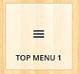
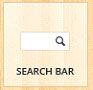

Header Constructor gives you the power to build your header to your needs. Pour your creativity.
To open up Header Constructor, Go to Theme Admin -> Builders -> Header Constructor, Additionally we have Header Constructor per page. The working of header constructor on page is same as the one in Admin Panel.
The Head Area is divided 3 parts -
- Top Bar- It is the top most bar and designed to be smaller than other areas and has a darker background.
- Menu Area - This is the middle and main area, by default menu and logo are present in this region.
- Bottom Bar- It is similar to menu area but divided from the rest by a border.
Pointers
- You can toggle the visibility of the menu by clicking eye icon.
- You can extra vertical spacing to menu areas, by adding the amount of space you want in VERTICAL SPACE textbox.
| Components |
What it actually do! |
|
You can add text using this component you can set its top, bottom, left and right margins. |
|
The logo that set from Options Panel -> Dashboard -> General Settings -> Logo Settings will display here. |
|  |
Top Menu 1. Set Top Menu Holder 1 and Top Menu Header 2 in Appearance -> Menu -> Theme Locations. |
|
Your Blog’s Tagline will display using this component. Taglines are set in Settings -> General -> Tagline. |
|  |
Ajax Search box will display.. |
|
You can add a variety of Social networking links there. |
 |
Top Menu 2 . Set Top Menu Holder 1 and Top Menu Header 2 in Appearance -> Menu -> Theme Locations. |
- This picture explains how the vertical spacing works.
- This Picture explains how the Margin works.
The Header loaded like this.
To Add a component drag to the area you want to show. To remove it , drag it back to the components area.
Template Chooser
In this Area, you can choose which template you want this for page. You can choose a variety of template from this. 8 Blog Templates, 12 Portfolio Types, 2 Contact Form Types, Sitemap and Custom Post Types.
Page Options
| Options |
What they are for! |
| Title Area Settings. |
Here you can choose the title and subtitle area to show/not, It's font, font-size, Background style, colors, Animation for the Title area. |
| Layout Settings |
Here you can choose how the page layout looks, like a page with Sidebar, or a full width or with a sticky sidebar, or a sidebar on top/bottom. An option to Choose Which Sidebar to show is also present here. |
| Dominant Color |
This color is used for the dominant color for the hover on featured image of that post to make it unique. |
| Media. |
Here you can set Which layered slider to be set or an option to select the featured image or a Slider using the images upload in Slideshow/Slider Images tab(marked as number 6)
|
| Header Constructor. |
You can create a seperate unique header for the page, the same steps as mention in Header Constructor. |
| Slideshow/Slider Images |
You can upload multiple images for the slider in Media Tab. |
| SEO Settings |
Here you can put meta keywords, meta describtio, and SEO title for the page. |
| Portfolio Settings |
If you choose one of the 12 Portfolio Template, you can tweak its setting here. Like Filtering Portfolio items using our Awesome Query Engine |
| Blog Settings |
If you choose a blog template from the Template Chooser, you can tweak its setting here. Like filtering the posts, add post bar, etc., |
| Custom Post Type |
If you choose the Custom Post Type template from the template chooser, then you can tweak its setting here. Like which custom post type to show on the page, also filter its using the Awesome Query Engine. |
Setting Featured Media
Limitless Provides you with 12 featured media types. Here is a basic primer on that.
- By default featured image is the default featured media which is set from bottom right corner "Set Featured Image".
- You can change this from custom page settings area , click on media tab.
- To use slider or gallery, you will need to add images. For that goto slideshow/slider images in same custom page settings area.
- Add your images here. Now you show slider or gallery related featured media.
- By Default all media elements have fixed height which is set from media tab only. To enable natural height of images, set adaptive height to yes.
Using Revolution Slider
Once revolution slider has been activated in Limitless, in the media tab in custom page settings a dropdown appears from where you can select the revolution slider to show as featured slider.
Dominant Mode allows you to add a unique touch to your portfolio items or posts. In this you set a background color and a opposite color. This color show off in templates, like on hovers in portfolio columns. You can find dominant color in custom page settings in edit post/portfolio in dominant color tab.
If you do not want to use it, click cross in the color picker field and it wont appear.
Here you can create you own content types (Own Post Types, no need of a plugin)
- Go to Theme Admin -> Content Types
- Enter the Post Names and Click "Create Custom Post"
- Click the Pen Icon in the left side of the Custom Post name you just create.
- Enter all the necessary texts.
- You can also Add Meta Boxes in the Meta Box Tab.
- Click Meta Boxes -> Add Meta Box -> Click the Pen Icon -> Enter the Details -> Choose a Input type (Text field, textarea or a Upload field). You can also give a default value for text and text area fields.
- For Example: If I create a Movie Post type.
- I can create meta boxes like Movie Length, Movie Rating (PG, PG-13 etc.,) in the Meta Boxes with a Input type of text field and some default value
- Save Changes.
- Back to Dashboard.
- All Set to go for the newly created Post Types! :)
As soon as the custom post type is created, it becomes available to all the widgets, Rad components and shortcode which supports showing posts in any manner.
To show custom posts in a template -
- Create a new page.
- Open select template dropdown and set it to Custom Template.
- On right settings button will appear from there you can set which posts types to show.
- Hit Publish, That's it.
Enigma styler is an amazing and very easy to use visual styler. To open in , goto WP Admin dashboard, click on Enigma Styler. Once it is opened. You can select the panel you want to style, open and start styling !
Enigma Styler, also provides way of saving style templates. So you can maintain revisions. To create the template enter you template name and hit create. It will create and make that template as active template. You can also export or import styles.
To set typography, goto engima styler. Once it has been opened, click on fonts menu item on top left in top bar.
To add fonts for elements in panels in sidebar, first you will need to support for the font. For that select your font and click on font support. A font panel will appear below the font selector. In that you can edit font weight and subsets.
Once done click on apply changes. The fonts will be available in panels for styling.
This section requires the basic knownledge of how woocommerce works. It won't be covered here.
Adding a Product
- Adding the product is same as any other theme. Just add title , content , image and set attributes
- Add page options work here also , you can set title or page settings here.
- You can also use featured media section to show galleries , video , slider or image. By default a gallery will be shown with images taken from product gallery section.
Creating a Shop Template
Setting the Shop template is done through woo commerce settings, if you have installed woo commerce pages then it is already set else goto woo commercer -> settings menu item from there you can set shop page.
This section requires the basic knownledge of how WPML plugin works. It won't be covered here. Please note that you will need to buy this plugin from wpml.org/. We have added compatibility for this plugin.
Installing and Activating the plugin.
- Once purchased you will need to activate WPML Multilingual plugin. It may take sometime to activate as WPML setups database and settings.
- Once plugin is activated you will get a message on top of page with options of reading a getting started guide if you are using it for the first time or to start configuring WPML. Click on the Button "No Thanks, I will configure myself".
- In first window select the contents the written it , it will be your main language.
- In next window select the languages you want to show in the language selectors.
- Last option is the place you want to place the language selector. You can change these options any time you time.
Adding switcher in Head Area
To add the wpml switch in head area goto Head Area Builder. Drag and drop the wpml widget to area you want to show.
To add same RAD Builder template in different language posts, Save the template in the original language, then you can access that template under library in other languages. Import it and change the parts to your needs.
For indepth documentation please refer to this http://wpml.org/documentation/getting-started-guide/
19. Limitless Compatibility.
If you are using limitless 1.5 or below versions, then to make the page contents comaptible with current version, follow these steps
- In the zip you have downloaded from themeforest you will find a plugin zip called limitless_compatble.zip
- After theme update, upload and activate that plugin.
- Now goto Limitless Compatibility menu in bottom left.
- Once Page has been opened click on Make Pages and Posts Compatible.
- Wait till page has been reloaded and you are done.
This plugin also adds css from old live styler and adds old icon files. Once you have fully shifted to new icons and builder, disable this plugin for faster performance.